请访问原文链接：在不受支持的 Mac 上安装 macOS (索引页面) 查看最新版。原创作品，转载请保留出处。
作者主页：sysin.org
macOS Ventura 正式版已发布，OpenCore Legacy Patcher 0.5 版本已支持。
请访问更新页面：在不受支持的 Mac 上安装 macOS Ventura (OpenCore Legacy Patcher v0.6.8)
- 2022.09.11 更新：优化了操作步骤的逻辑顺序，更新了截图的版本和样式。
- 2022.08.06 更新：Nvidia Kepler GPU 的问题已解决，推荐所有用户使用 macOS 12.5！
- 2022.07.21 更新：现已支持 macOS Monterey 12.5，但带有 Nvidia Kepler 的 Mac 不受支持，详见文中描述。
- 2022.06.17 更新：现已有限支持 macOS Ventura！
一、介绍
本文通用于 macOS Monterey 和 macOS Big Sur，也可以视为笔者早期文章的升级版。
感谢评论区读者的反馈！
这一章节将介绍 macOS Monterey 的系统要求和不受支持的 Mac 机型但使用 OpenCore Patcher 可以支持的机型，以及 OpenCore Legacy Patcher 的优缺点。
1. macOS Monterey 简介
macOS Monterey
各种超赞表现，
向大家问好。
从联络、分享到创造，感觉全然一新。FaceTime 通话的新功能，个个招人喜欢。Safari 浏览器改头换面，待你探索。通用控制和快捷指令，开创新颖强大的工作方式。专注模式，做起事来无打扰。
2021 年 10 月 26 日推出。

部分特性概览：
- 照片、消息和更多升级共享 iOS 和 iPadOS 15 的功能
- 通用控制：可以让你用一种惊人的方式从 Mac 控制其他苹果设备
- 从 iOS 设备 AirPlay 到 Mac
- 作为 “自动操作” 的替代品引入的快捷方式应用程序
- Safari 在所有设备上都重新设计了新的 UI、选项卡组和 web 扩展
2. macOS Monterey 硬件要求
- MacBook 2016 年初及后续机型 进一步了解 >
- MacBook Air 2015 年初及后续机型 进一步了解 >
- MacBook Pro 2015 年初及后续机型 进一步了解 >
- Mac mini 2014 年末及后续机型 进一步了解 >
- iMac 2015 年末及后续机型 进一步了解 >
- iMac Pro 2017 年及后续机型
- Mac Pro 2013 年末及后续机型 进一步了解 >
3. 什么是 OpenCore
这是一个复杂的引导加载程序，用于在内存中注入和修补数据，而不是在磁盘上。这意味着我们能够在许多配备 Metal GPU 且不受支持的 Mac 上获得接近原生的体验。这包括其他修补程序的许多渴望已久的功能，例如：
- 系统完整性保护（SIP）、FileVault 2、.im4m 安全启动和存储
- 所有 Mac 上的原生 OTA OS DELTA 更新
- Recovery OS、安全模式和单用户模式启动
- WPA Wi-Fi 和个人热点支持
虽然 Hackintosh 社区的许多 PC 用户都熟悉 OpenCore，但 OpenCore 被设计为 Mac 和 PC 无关，确保两个平台都可以轻松使用它。借助 OpenCore Legacy Patcher，可以帮助我们自动化流程，让 OpenCore 的运行变得更加容易。
⚠️ 警告：Boot Camp 功能将有限支持，基于传统 MBR 的安装不会显示在 OpenCore 中，同时因 CPU 限制，仅特定机型支持 UEFI Windows 10，请参看：Installing UEFI Windows 10
4. 支持的 macOS
关于操作系统支持，如下：
| 支持入口 | 描述 | 支持的操作系统 | 备注 |
|---|---|---|---|
| 宿主操作系统 | 指支持运行 OpenCore-Patcher.app 的操作系统 | macOS 10.9 - macOS 12 | 手动安装 Python 3.9 或更高版本 则支持 10.7+，只需运行 repo 中的 OpenCore-Patcher.command。 |
| 目标操作系统 | 指可以修补以与 OpenCore 一起运行的操作系统 | macOS 11 - macOS 12 | 可能支持 10.4 和更新版本（处于潜在损坏状态）。不提供支持。 |
macOS 13 在新版中已经可以支持，因尚未发布正式版本，尚未正式列入支持列表。
本文目标是在以下不受支持的 Mac 机型上安装 macOS Big Sur、macOS Monterey 和 macOS Ventura。
5. 支持的 Mac 机型
任何支持 SSE4.1 CPU 和 64 位固件的硬件都可以在此修补程序上运行。要检查您的硬件型号，请在终端的适用机器上运行以下命令：
1 | system_profiler SPHardwareDataType | grep 'Model Identifier' |
下表将列出补丁程序当前支持和不支持的所有功能：
MacBook
| SMBIOS | Year | Supported | Comment |
|---|---|---|---|
| MacBook1,1 | Mid-2006 | NO | 32-Bit CPU limitation |
| MacBook2,1 | Late 2006 | NO | 32-Bit Firmware limitation |
| MacBook3,1 | Late 2007 | NO | 32-Bit Firmware limitation |
| MacBook4,1 | Early 2008 | YES | - No GPU Acceleration in Mavericks and newer - No Keyboard and Trackpad - No USB |
| MacBook5,1 | Late 2008 | YES | - GPU Acceleration in Public Beta, see current issues #108 |
| MacBook5,2 | Early 2009 | YES | - GPU Acceleration in Public Beta, see current issues #108 - Trackpad is recognized as mouse |
| MacBook6,1 | Late 2009 | YES | - GPU Acceleration in Public Beta, see current issues #108 |
| MacBook7,1 | Mid-2010 | YES | - GPU Acceleration in Public Beta, see current issues #108 |
| MacBook8,1 | Mid-2015 | YES | Everything is supported |
MacBook Air
| SMBIOS | Year | Supported | Comment |
|---|---|---|---|
| MacBookAir1,1 | Early 2008 | NO | Requires SSE4.1 CPU |
| MacBookAir2,1 | Late 2008 | YES | GPU Acceleration in Public Beta, see current issues #108 |
| MacBookAir3,1 | Late 2010 | YES | 同上 |
| MacBookAir3,2 | 同上 | YES | 同上 |
| MacBookAir4,1 | Mid-2011 | YES | 同上 |
| MacBookAir4,2 | 同上 | YES | 同上 |
| MacBookAir5,1 | Mid-2012 | YES | Everything is supported |
| MacBookAir5,2 | 同上 | YES | 同上 |
| MacBookAir6,1 | Mid-2013, Early 2014 | YES | 同上 |
| MacBookAir6,2 | 同上 | YES | 同上 |
MacBook Pro
| SMBIOS | Year | Supported | Comment |
|---|---|---|---|
| MacBookPro1,1 | Early 2006 | NO | 32-Bit CPU limitation |
| MacBookPro1,2 | 同上 | NO | 同上 |
| MacBookPro2,1 | Late 2006 | NO | 32-Bit Firmware limitation |
| MacBookPro2,2 | 同上 | NO | 同上 |
| MacBookPro3,1 | Mid-2007 | NO | Requires SSE4.1 CPU |
| MacBookPro4,1 | Early 2008 | YES | GPU Acceleration in Public Beta, see current issues #108 |
| MacBookPro5,1 | Late 2008 | YES | 同上 |
| MacBookPro5,2 | Early 2009 | YES | 同上 |
| MacBookPro5,3 | Mid-2009 | YES | 同上 |
| MacBookPro5,4 | 同上 | YES | 同上 |
| MacBookPro5,5 | 同上 | YES | 同上 |
| MacBookPro6,1 | Mid-2010 | YES | 同上 |
| MacBookPro6,2 | 同上 | YES | 同上 |
| MacBookPro7,1 | 同上 | YES | 同上 |
| MacBookPro8,1 | Early 2011 | YES | 同上 |
| MacBookPro8,2 | 同上 | YES | 同上 |
| MacBookPro8,3 | 同上 | YES | 同上 |
| MacBookPro9,1 | Mid-2012 | YES | Everything is supported |
| MacBookPro9,2 | 同上 | YES | 同上 |
| MacBookPro10,1 | Mid-2012, Early 2013 | YES | 同上 |
| MacBookPro10,2 | Late 2012, Early 2013 | YES | 同上 |
| MacBookPro11,1 | Late 2013, Mid-2014 | YES | 同上 |
| MacBookPro11,2 | 同上 | YES | 同上 |
| MacBookPro11,3 | 同上 | YES | 同上 |
Mac mini
| SMBIOS | Year | Supported | Comment |
|---|---|---|---|
| Macmini1,1 | Early 2006 | NO | 32-Bit CPU limitation |
| Macmini2,1 | Mid-2007 | NO | 32-Bit Firmware limitation |
| Macmini3,1 | Early 2009 | YES | GPU Acceleration in Public Beta, see current issues #108 |
| Macmini4,1 | Mid-2010 | YES | 同上 |
| Macmini5,1 | Mid-2011 | YES | 同上 |
| Macmini5,2 | 同上 | YES | 同上 |
| Macmini5,3 | 同上 | YES | 同上 |
| Macmini6,1 | Late 2012 | YES | Everything is supported |
| Macmini6,2 | 同上 | YES | 同上 |
iMac
| SMBIOS | Year | Supported | Comment |
|---|---|---|---|
| iMac4,1 | Early 2006 | NO | 32-Bit CPU limitation |
| iMac4,2 | Mid-2006 | NO | 同上 |
| iMac5,1 | Late 2006 | NO | 32-Bit Firmware limitation |
| iMac5,2 | 同上 | NO | 同上 |
| iMac6,1 | 同上 | NO | 同上 |
| iMac7,1 | Mid-2007 | YES | - Requires an SSE4.1 CPU Upgrade - GPU Acceleration in Public Beta, see current issues #108 - Stock Bluetooth 2.0 card non-functional |
| iMac8,1 | Early 2008 | YES | - GPU Acceleration in Public Beta, see current issues #108 |
| iMac9,1 | Early 2009 | YES | 同上 |
| iMac10,1 | Late 2009 | YES | - GPU is socketed, recommend upgrading to Metal GPU - GPU Acceleration in Public Beta, see current issues #108 |
| iMac11,1 | 同上 | YES | 同上 |
| iMac11,2 | Mid-2010 | YES | 同上 |
| iMac11,3 | 同上 | YES | 同上 |
| iMac12,1 | Mid-2011 | YES | 同上 |
| iMac12,2 | 同上 | YES | 同上 |
| iMac13,1 | Late 2012 | YES | Everything is supported |
| iMac13,2 | 同上 | YES | 同上 |
| iMac13,3 | 同上 | YES | 同上 |
| iMac14,1 | Late 2013 | YES | 同上 |
| iMac14,2 | 同上 | YES | 同上 |
| iMac14,3 | 同上 | YES | 同上 |
| iMac14,4 | Mid-2014 | YES | 同上 |
| iMac15,1 | Late 2014, Mid-2015 | YES | 同上 |
- For iMac10,1 through iMac12,x, we highly recommend users upgrade the GPU to a Metal supported model. See here for more information: iMac late 2009 to mid-2011 Graphics Card Upgrade Guide
Mac Pro
| SMBIOS | Year | Supported | Comment |
|---|---|---|---|
| MacPro1,1 | Mid-2006 | NO | 32-Bit Firmware limitation |
| MacPro2,1 | Mid-2007 | NO | 同上 |
| MacPro3,1 | Early 2008 | YES | - Potential boot issues with built-in USB 1.1 ports (recommend using a USB 2.0 hub or dedicated USB PCIe controller) - Potential boot issues with stock Bluetooth card, recommend removing to avoid kernel panics |
| MacPro4,1 | Early 2009 | YES | Everything is supported as long as GPU is Metal capable |
| MacPro5,1 | Mid-2010, Mid-2012 | YES | 同上 |
Xserve
| SMBIOS | Year | Supported | Comment |
|---|---|---|---|
| Xserve1,1 | Mid-2006 | NO | 32-Bit Firmware limitation |
| Xserve2,1 | Early 2008 | YES | Everything is supported as long as GPU is Metal capable |
| Xserve3,1 | Early 2009 | YES | 同上 |
6. 机型建议
通过上表，我们可以看到在 2012 年及以后的机型，才能获得完整功能支持，获得较好的用户体验。
旧版 Mac 即使安装成功，功能上没有异常，卡顿也在所难免。实际上要获得流畅体验，起码是要在官方硬件兼容列表的机型。
这里仅仅是提供了一种方法，让你享受折腾的乐趣！
7. OpenCore Legacy Patcher 的优缺点
对于 OpenCore Legacy Patcher，我们建议用户通过下表了解与其他修补程序相比的优缺点。每个都有积极和消极的一面，我们认为在修补另一台用户的机器时透明度是最重要的。不应该有可能误导用户的灰色区域。
- 注意：Patched Sur（已经 404）和 MicropatcherAutomator 是 big-sur-micropatcher 的迭代产品，因此它们具有许多相同的优点和限制。官方以 Patched Sur 用于此比较，但是该项目主页已经无法访问，所以这里用 micropatcher 代称上述程序。
| Features | OpenCore Legacy Patcher | micropatcher |
|---|---|---|
| Over The Air Updates（在线更新） | 系统偏好设置中原生支持（additionally supports Deltas (~2GB) for Metal GPUs） | 升级仅当 macOS 完整软件包发布时可用 (~12GB), 发布时间通常与系统偏好设置中的软件更新一致，但是测试版一般要延迟一天 |
| FileVault | 完全支持所有机器（Note unsupported on APFS ROM Patched Macs, revert to stock firmware to resolve） | 不支持 |
| System Integrity Protection | 在 Metal GPU 上完全启用 | 2013 年初及更早机型在修补过程中和首次启动之后禁用，否则启用 |
| APFS 快照 | 完全启用 | 已禁用 |
| 用户界面 | GUI or TUI interface | SwiftUI interface or shell script |
| 支持的操作系统版本 | 10.7-13 | 10.15-11 |
| 固件补丁 | 不需要 | 没有原生 APFS 支持的机型需要 |
| BootCamp | 需要 EFI 启动支持 | 原生支持 |
| Non-Metal GPU 加速 | 积极开发中（see Acceleration Progress Tracker: Link） | 目前没有研究 |
| El Capitan 时代的 Wifi 卡 | 支持 | 不支持 |
| WPA 无线支持 | 支持 | 少数可能会在 2013 年初及更早的型号上遇到问题 |
| 个人热点支持 | 原生支持 | 通常需要额外的步骤才能在 2013 年初和更早的型号上实现 |
| 配备 Polaris+ GPU 的 Mac Pro 和 iMac 是否支持 HEVC/H.265 | 支持 | 不支持 |
| Big Sur style 启动选择器 | 可用（though as a shim to the original boot picker） | 不可用 |
| 休眠支持 | 除了原配驱动器外，还支持 2011 年及更早型号上的第 3 方 SATA SSD | 仅支持 2011 年及更早型号的原配驱动器 |
| Sidecar 支持 | 支持任何带有 Metal Intel iGPU 的 Mac（artifacting way exhibited on high movement screen content） | 完全不支持 |
二、安装准备
1. 下载 Opencore-Legacy-Patcher
文件说明（以 v0.4.11 为例）：
- OpenCore-Patcher-GUI.app.zip：图形界面 App，OpenCore-Patcher.app 的 zip 压缩包。
- OpenCore-Patcher-GUI.dmg 是上述图形界面 App 的 DMG 映像，直接拖拽即可安装，推荐！
- AutoPkg-Assets.pkg：OpenCore-Patcher 使用的其他资源，需要时自动拉取，无需下载。
存档下载：百度网盘链接：https://pan.baidu.com/s/1F8mQT9AfQO37IMKl364eMA?pwd=kb8n
下载后请将 OpenCore-Patcher.app 拖拽到 Applications（应用程序） 目录下。
版本更新：v0.4.3 支持 macOS 12.3。
版本更新：v0.4.5 支持 macOS 12.4。
版本更新：v0.4.7 支持 macOS 13 beta。
关于 macOS Ventura 的支持，请先了解 macOS Ventura and OpenCore Legacy Patcher Support。
版本更新：v0.4.9 支持 macOS 12.5。⚠️ 警告：macOS 12.5: Nvidia Kepler and WindowServer crashing #1004。该版本不支持 Ventura。
版本更新：v0.4.10 已经解决 v0.4.9 的问题，支持 macOS 12.5 中的 Nvidia Kepler GPUs，推荐使用 12.5！该版本不支持 Ventura。
版本更新：v0.4.11，随着 Apple 发布 macOS Monterey 12.6，此次发布与操作系统相关的一些修复程序。主要的一点是在 Ivy Bridge iGPU 和非 Metal GPU 上对 Safari 16.0 的 WebKit 支持。该版本不支持 Ventura。
- 如果您已安装/更新到 12.6，Safari 16.0 将是独立于操作系统的附加更新（12.6 默认随附 Safari 15.6.1）。如果您发现 Google 文本元素无法正确呈现，请重新运行根卷修补程序。
2. 下载 macOS
下载后打开映像，将 “安装 macOS Monterey” App 拖拽到（或者自动安装到）Applications（应用程序）下。
3. USB 存储设备 16G 及以上
可以是 U 盘，甚至是 SD 卡，当然最好是 SSD 的移动硬盘，容量 16G 及以上。
提示：只需要一个 USB 存储设备。
三、构建和安装
1. 创建启动介质
将上述准备的 U 盘（或者其他 USB 存储设备，以下统称 U 盘）连接 Mac 电脑，打开 “磁盘工具”，选择 U 盘，点击 “抹掉”，格式如下：
- Mac OS X 扩展（日志式）；
- GUID 分区图；
- 分区名称：sysin
打开 “终端”，执行如下命令（以 macOS Monterey 为例）：
1 | sudo /Applications/Install\ macOS\ Monterey.app/Contents/Resources/createinstallmedia --volume /Volumes/sysin |
根据提示输入当前用户密码（sudo 密码），按 Y 确认，等待几分钟即可完成。
创建完毕后，卷名称将自动修改为：
Install macOS Monterey
同样也支持 macOS Big Sur 和 macOS Ventura，命令如下：
macOS Big Sur：
1 | sudo /Applications/Install\ macOS\ Big\ Sur.app/Contents/Resources/createinstallmedia --volume /Volumes/sysin |
macOS Ventura：
1 | sudo /Applications/Install\ macOS\ Ventura.app/Contents/Resources/createinstallmedia --volume /Volumes/sysin |
2. OpenCore Patcher 设置
打开 OpenCore Patcher，点击 “Settings”，勾选 “Verbose”，这样在启动系统安装过程中会输出详细信息，以便排错。
有读者反馈，某些机型勾选 “Verbose” 无法正常启动，如果勾选有异常，请尝试取消勾选。
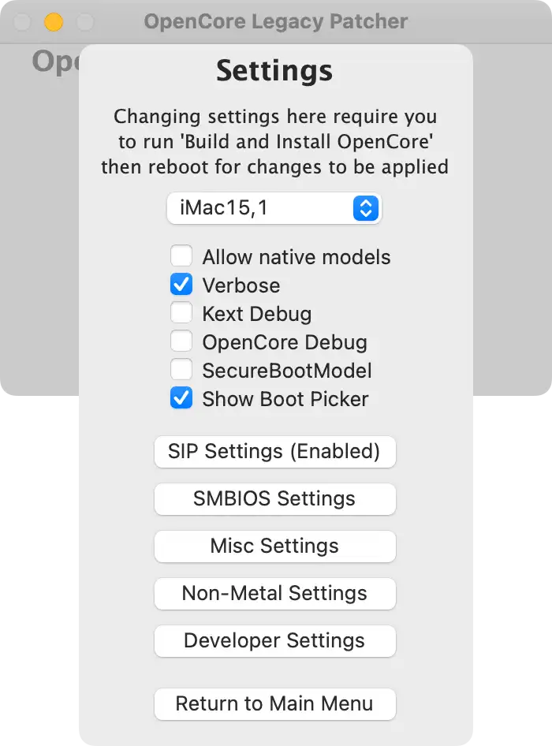
一般在需要安装的 Mac 上运行该程序（或称为目标 Mac），也可以在另外一台 Mac 为其他 Mac 创建安装介质，点击 “Settings”，下拉选择对应的机型，如图：
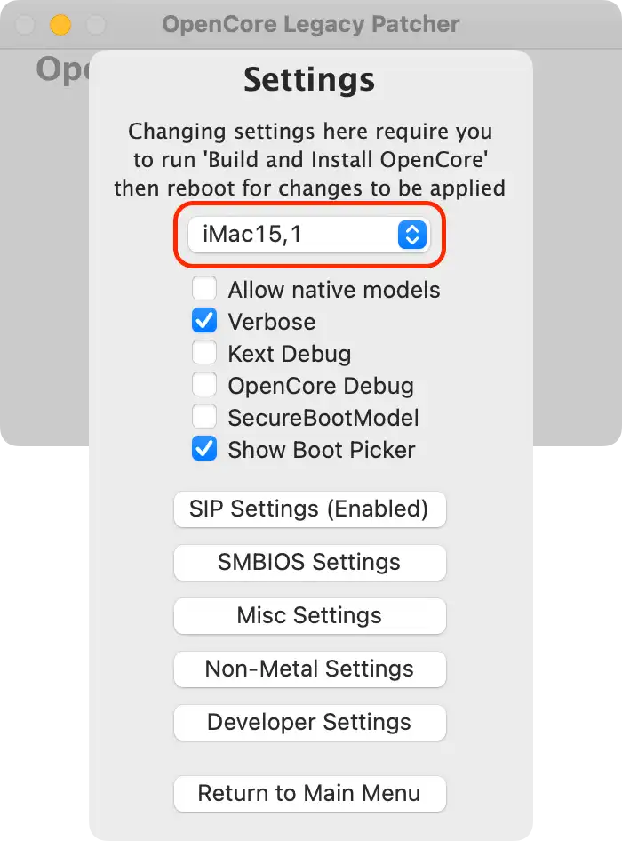
这里是以 “型号标识符” 来表示机型，可以通过点击系统菜单栏 > “关于本机”，点击（ “概览” 标签页中的）“系统报告…”，此时打开 “系统信息” 可以看到 “型号标识符”。
3. Build and Install OpenCore（构建和安装 OpenCore）
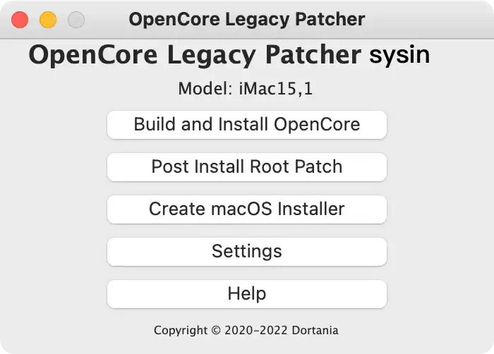
在 OpenCore-Patcher 主界面点击 “Build and Install OpenCore” 按钮，在出现的画面点击 “Build OpenCore”
Build 成功后，如图，点击 “Install OpenCore”（现在构建成功后会自动弹出对话框），点击 “Install to disk” 即可
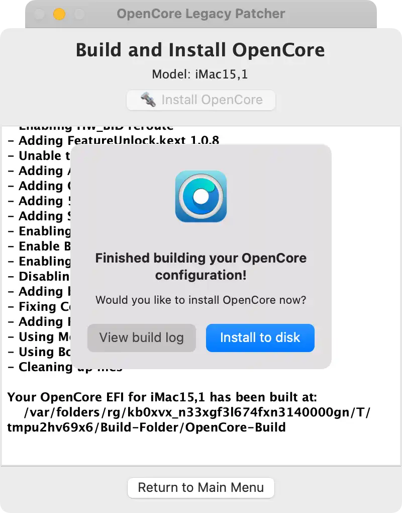
选择要安装的磁盘，如下图，disk0 为电脑内置磁盘，默认分区的情况下，USB 存储设备通常为 disk2，如果有两块磁盘，或者多个 USB 存储设备，都会列出，本例中 disk2 是一块 USB SSD，点击即可。
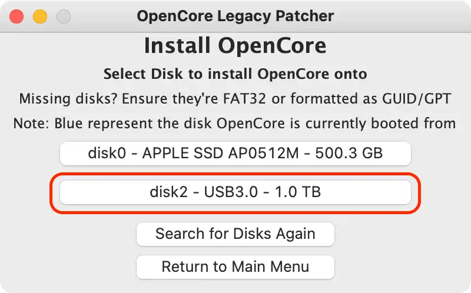
出现 EFI 分区选择界面，点击即可。
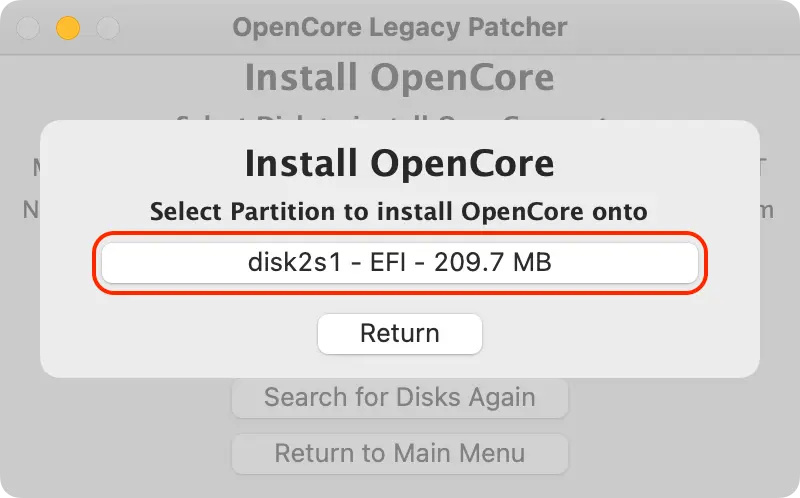
4. 启动 OpenCore 和 macOS Installer
现在重新启动 Mac，按住 Option 键不放，直到出现启动选择画面，选择带有 OpenCore 徽标的 EFI Boot 图标：
按住 Control 键可以将使其成为默认启动项，即暂时使用 USB 作为默认启动项，安装后任务将解决默认启动问题。
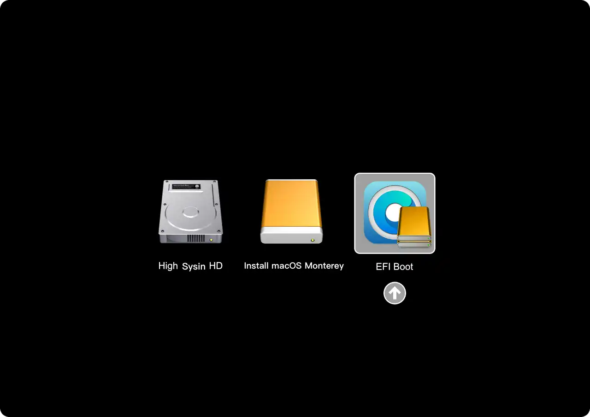
您已经成功加载了 OpenCore，出现如下 OpenCore Picker（启动选择器）画面：
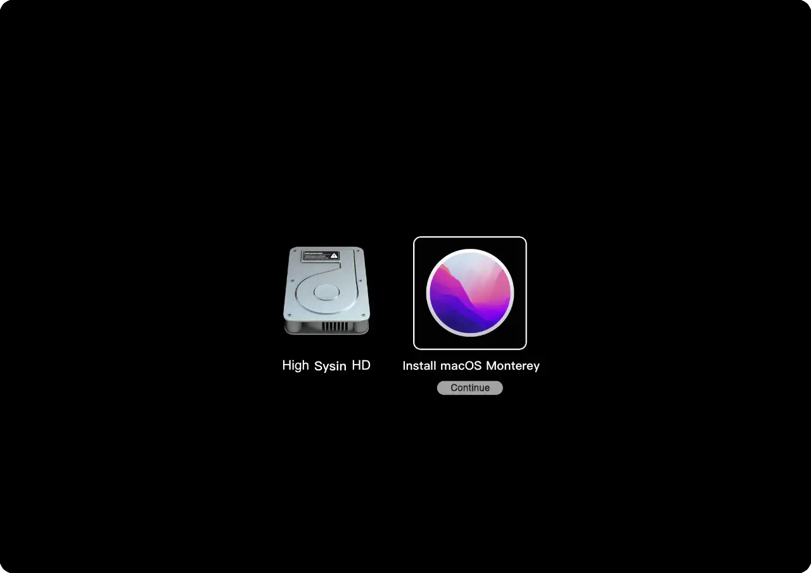
本例中选择 Install macOS Monterey（或者是 Install macOS Big Sur），经过详细的字符输出信息，将启动到正常的 macOS 安装画面。
5. 开始安装 macOS
正常安装步骤这里不再赘述，可以参看：如何在 Mac 和虚拟机上安装 macOS。
⚠️ 重要提示：安装前请选择 “磁盘工具”，抹掉整个磁盘后全新安装。虽然理论上也可以进行升级安装，但是这些机型通常都比较老旧了，升级卡顿更加明显，可能（大概率）会出现一些未知问题。
6. 启动 macOS
现在已经可以通过 OpenCore Picker（启动选择器）启动到安装后的 macOS 版本。如果没有正确启动，请重新启动按住 Option 键不放，出现的画面中选择带有 OpenCore 徽标的 EFI Boot 图标，然后选择灰色的磁盘图标（例如上图中的磁盘名称为 “High Sysin HD”，通常默认名称为 “Macintosh HD”）。
MacBookPro11,3 注意：在启动 macOS Monterey 时，如果尚未安装加速补丁（安装后任务：Post-Install Root Patch），则需要启动到安全模式。否则，由于缺少 Nvidia 驱动程序，您会遇到黑屏。
- 在 OpenCore Picker（启动选择器）中选择 macOS Monterey 启动磁盘时按住 Shift+Enter 可以启动到安全模式。
四、安装后任务
1. 再次下载 OpenCore Legacy Patcher
现在已经正常登录新安装的系统，再次下载 OpenCore Legacy Patcher，同安装准备阶段。
2. 将 OpenCore 安装到内置存储中
现在 OpenCore 是安装在 USB 存储的 EFI 分区，拔掉 USB 存储将无法正常启动，我们需要将 OpenCore 安装到 Mac 内置储存的 EFI 分区中，这样才能脱离 USB 存储正常启动。步骤与上文中 “构建和安装 OpenCore” 类似。
运行 OpenCore Patcher，点击 Settings 根据需要更改设置；
点击 “Build and Install OpenCore” 再次 “Build OpenCore”，“Install OpenCore” 时选择内置存储（通常是 disk0）；
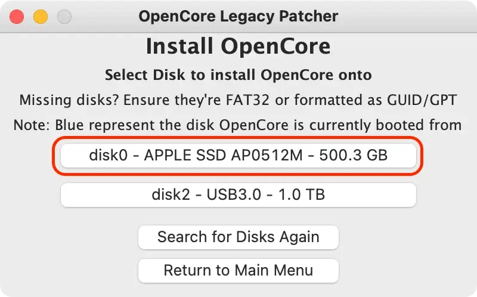
出现 EFI 分区选择界面，点击即可；
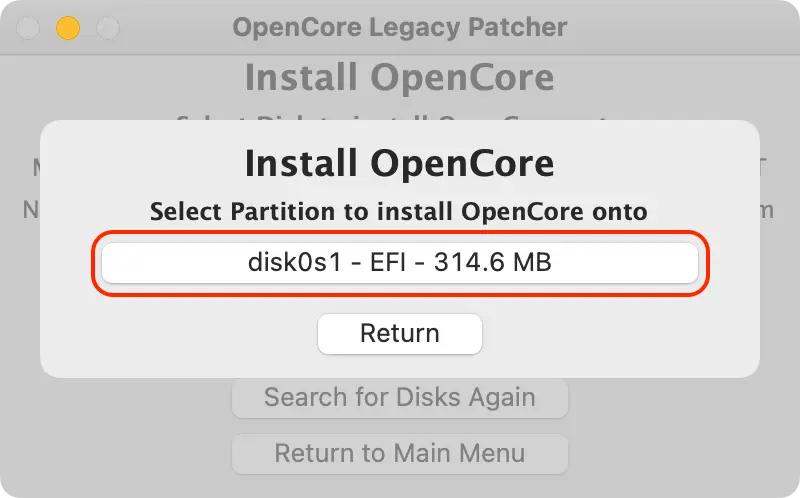
重启按住 Option，然后选择内部 EFI 分区，即可出现 OpenCore Picker（启动选择器），再次正常启动系统。
3. 无需 Verbose 或 OpenCore Picker 即可无缝启动
运行 OpenCore Patcher 并点击 “Settings”，设置如下：
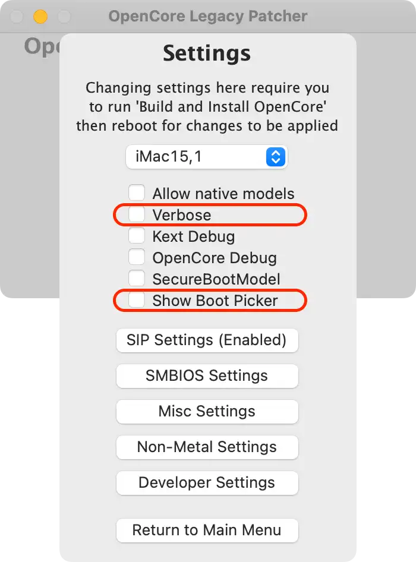
再次 “Build and Install OpenCore” 同上 2，以使设置生效。
现在要显示 OpenCore Picker（启动选择器），您只需在单击 EFI 启动时按住 “ESC” 键，然后在看到左上角的光标箭头时松开 “ESC” 键。
4. 启用 SIP（一般忽略）
对于许多用户而言，默认情况下会在构建时启用 SIP。对于 Intel HD 4000 用户，您可能已经注意到 SIP 被部分禁用。这是为了确保与 macOS Monterey 完全兼容，并允许它与旧操作系统之间无缝启动。但是对于不打算启动 Monterey 的用户，您可以在 Settings - SIP Settings 下重新启用。
注意：非 Metal GPU 的机器无法在 Big Sur 中启用 SIP，因为已修补根卷（Post-Install Root Patch）。
| SIP 启用 | SIP 降级（Root Patching） | SIP 禁用 |
|---|---|---|
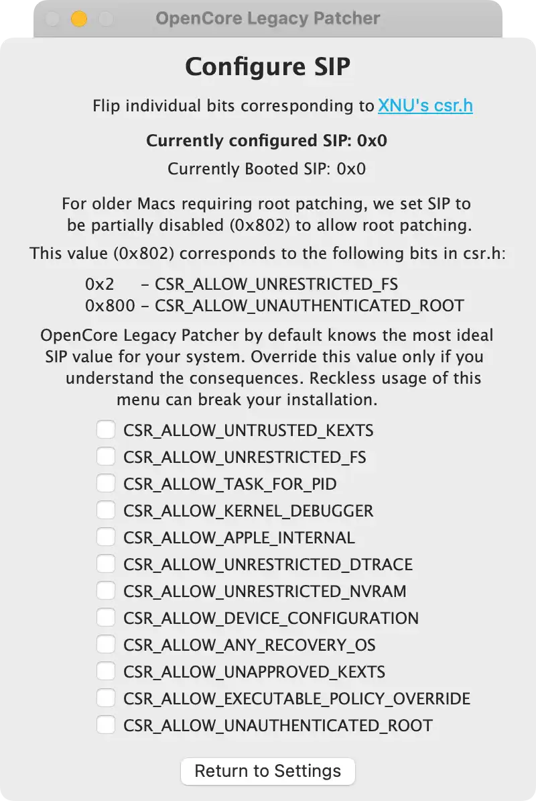 | 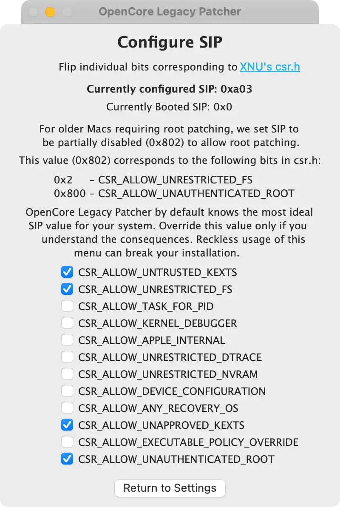 | 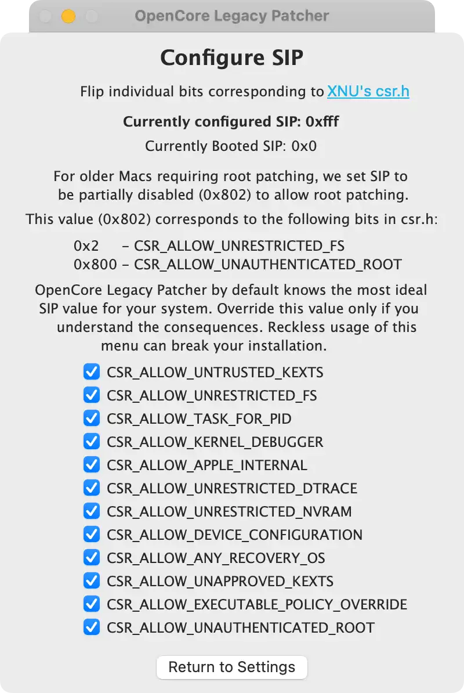 |
如果您不确定是否应该启用 SIP，请保持原样。
已经运行 Post-Install Root Patch 的系统无法在不破坏当前安装的情况下启用 SIP。
5. 运行 “Post-Install Root Patch”
对于使用不受支持的 GPU/Wi-Fi 卡的用户，您需要运行 Post Install Root Volume 补丁以恢复功能。
OpenCore-Patcher 中点击 “Post-Install Root Patch”，会列出需要修补的功能（0.4.4+ 会自动提示安装 Root Patch）。
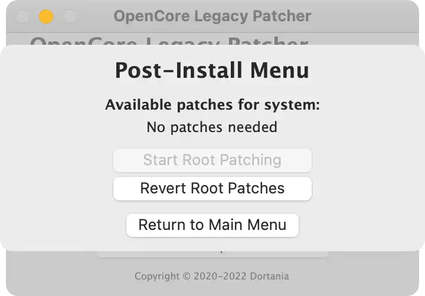
点击 “Start Root Patching” 开始修复（如果无需修复，该按钮灰色不可用）。
修补成功后会提示重启系统生效。
支持以下型号的 GPU 和无线网卡：
Unsupported GPUs in macOS Big Sur
- Nvidia:
- Tesla (8000 - 300 series)
- AMD:
- TeraScale (2000 - 6000 series)
- Intel:
- Iron Lake
- Sandy Bridge (2000 - 3000 series)
Unsupported GPUs in macOS Monterey
- Nvidia:
- Tesla (8000 - 300 series)
- Kepler (600 - 800 series)
- AMD:
- TeraScale (2000 - 6000 series)
- Intel:
- Iron Lake
- Sandy Bridge (2000 - 3000 series)
- Ivy Bridge (4000 series)
Unsupported Wireless Cards in macOS Monterey
- Broadcom:
- BCM94328
- BCM94322
- Atheros
GPUs requiring patching in macOS Ventura
- NVIDIA:
- Kepler (600 - 800 series)
- AMD:
- GCN 1-3 (7000 - R9 series)
- Polaris (RX 4xx/5xx series, if CPU lacks AVX2)
- Intel:
- Ivy Bridge (4000 series)
- Haswell (4400, 4600, 5000 series)
- Broadwell (6000 series)
- Skylake (500 series)
五、解决遗留加速问题
产品团队已经总结了一些常见的问题及其解决方案，如果遇到相关问题请点击以下链接查看（英文）。
- 破碎的背景模糊
- 下载较旧的非 Metal 应用程序
- 无法运行缩放
- 无法向应用授予特殊权限（例如摄像头访问缩放）
- 键盘背光坏了
- 照片和地图应用程序严重失真
- 编辑侧边栏小部件时无法按 “完成”
- 在 macOS 11.3 和更高版本中的 AMD/ATI 从睡眠中唤醒严重失真
- 无法在 2011 15"和 17" MacBook Pro 上切换 GPU
- ATI TeraScale 2 GPU (HD5000/HD6000) 上的不稳定颜色
- 无法允许 Safari 扩展
- 无法在 2011 年 15 英寸和 17 英寸 MacBook Pro 上登录
六、如何更新系统版本
根据项目描述应用该补丁是可以支持 OTA 系统更新的（系统偏好设置 - 软件更新），笔者并不推荐如此操作，老旧 Mac 本来性能是问题，这样升级会加剧系统卡顿，升级异常也未可知。强烈不建议跨版本升级。
即使是官方支持的 Mac 机型也不建议随意在线更新。更何况 OLP 还存在版本适配问题，特别是 macOS 版本未到达 x.5 之时。
如果需要更新，我们需要重复上述步骤，使用新版的 macOS 映像重新安装，只是在操作步骤中，不要抹掉分区，直接选择原来的分区进行安装，将自动进行系统升级（用户数据和 App 将保留，记得先备份重要数据）。
对于普通用户而已，一个大版本，如果使用没有问题，也无需考虑小版本升级，通常 x.5 版本流畅度和功能将达到相对完善状态，后续多为安全修复。
未尽事宜请访问项目主页：OpenCore-Legacy-Patcher
七、补充章节：通用控制
关于在不受支持的 Mac 机型上是否支持通用控制（Universal Control），以及如何启用通用控制，增加一个补充章节。
限于篇幅，单独列出：不受支持的 Mac 上的通用控制
更多：

文章用于推荐和分享优秀的软件产品及其相关技术，所有软件默认提供官方原版（免费版或试用版），免费分享。对于部分产品笔者加入了自己的理解和分析，方便学习和研究使用。任何内容若侵犯了您的版权，请联系作者删除。如果您喜欢这篇文章或者觉得它对您有所帮助，或者发现有不当之处，欢迎您发表评论，也欢迎您分享这个网站，或者赞赏一下作者，谢谢！
 支付宝赞赏
支付宝赞赏  微信赞赏
微信赞赏赞赏一下
敬请注册！点击 “登录” - “用户注册”（已知不支持 21.cn/189.cn 邮箱）。 请勿使用联合登录（已关闭）。